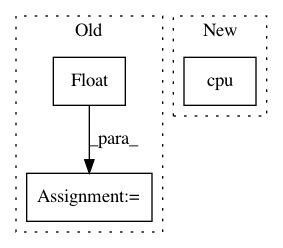

4f91cb1bfab978c05a30de8a70e36426aaa19df5,examples/3d/compute_speed.py,,,#,14
Before Change
x_data = x_data.cuda()
else:
scattering.cpu()
x_data = torch.randn(1, M, N, O).float()
x_data = x_data.cpu()
// One pass because the first forward is always slower
scattering(x_data)
After Change
if device == "gpu":
x = x.cuda()
else:
x = x.cpu()
scattering.forward(x, method="integral", integral_powers=integral_powers)
if device == "gpu":
In pattern: SUPERPATTERN
Frequency: 3
Non-data size: 3
Instances
Project Name: kymatio/kymatio
Commit Name: 4f91cb1bfab978c05a30de8a70e36426aaa19df5
Time: 2018-11-21
Author: janden@flatironinstitute.org
File Name: examples/3d/compute_speed.py
Class Name:
Method Name:
Project Name: layumi/Person_reID_baseline_pytorch
Commit Name: 6b672ac6a0c6bbc41f89d3e4bc528b937363e032
Time: 2019-06-02
Author: zdzheng12@gmail.com
File Name: test.py
Class Name:
Method Name: extract_feature
Project Name: rusty1s/pytorch_geometric
Commit Name: 15f8d1934dc72debc6928c4461a1f8f65e551ce1
Time: 2021-03-28
Author: matthias.fey@tu-dortmund.de
File Name: examples/attentive_fp.py
Class Name:
Method Name: test